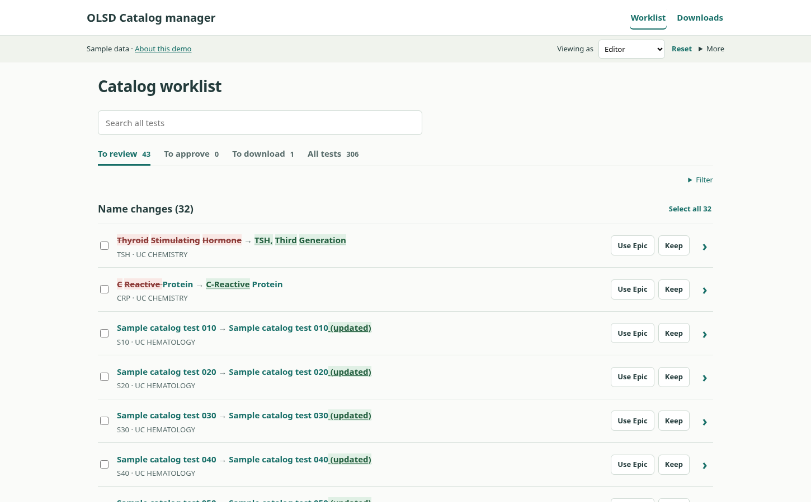
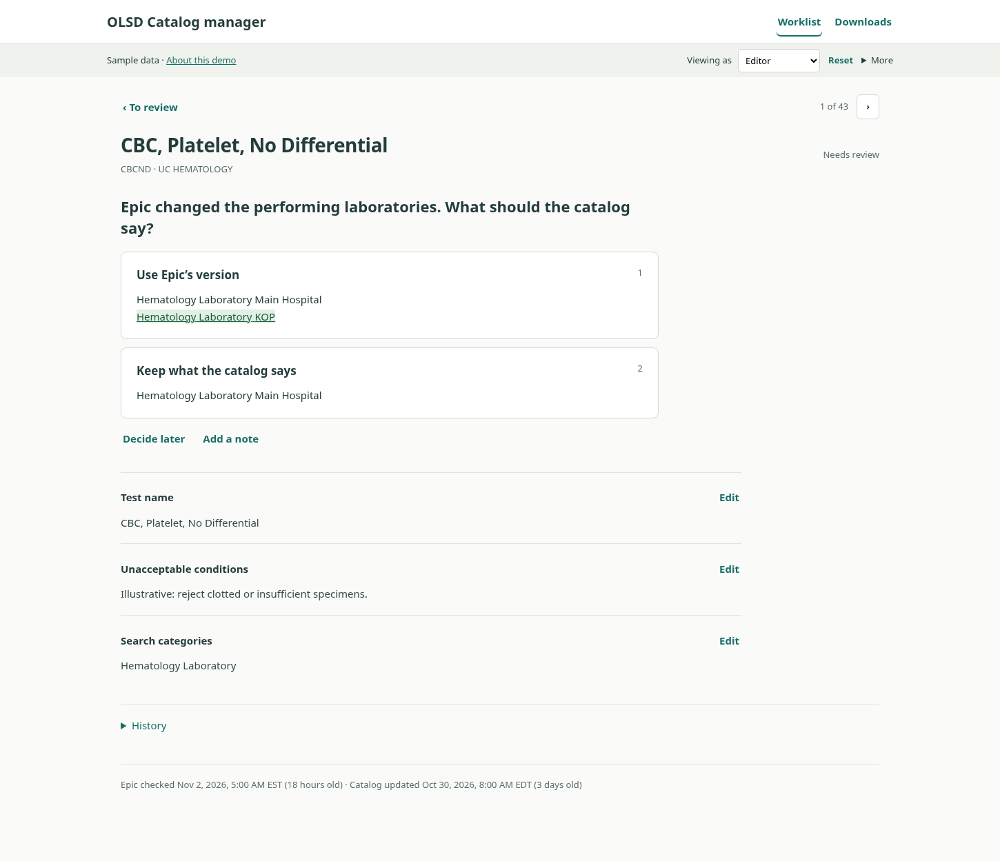
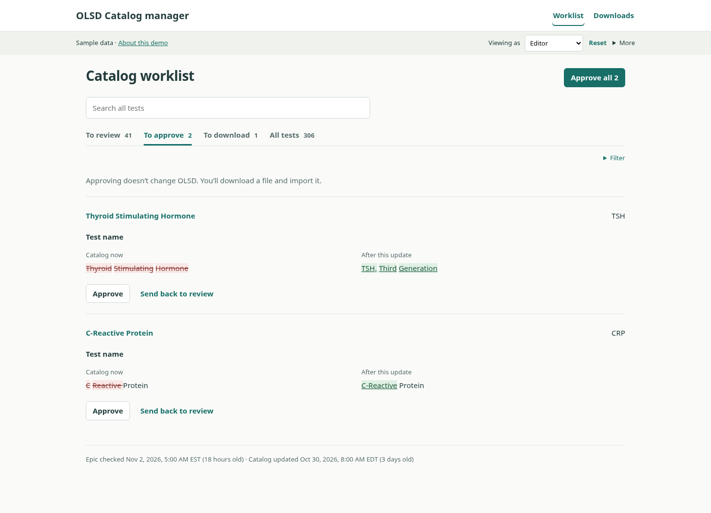
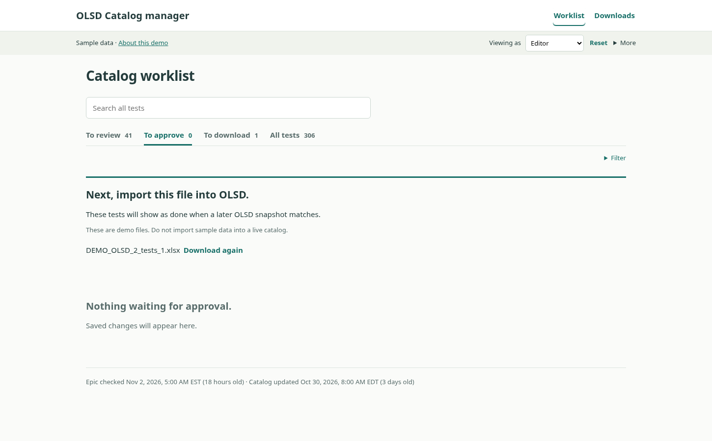
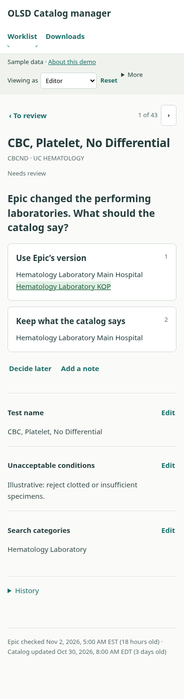

Open the demo · Read the code · Dated verification · Browser checks
Sample data only. No live Epic or OLSD connections. Do not import these sample Excel files into a real catalog.
Keys: 1 chooses Epic; 2 keeps the catalog value; Ctrl/Cmd+S saves. Shortcuts do not approve.
The checks measure a simple choice saved in 2 clicks, one change downloaded in 5 clicks, and 32 name changes downloaded in 6 clicks. Choosing never saves; saving never approves.
OLSD is the online laboratory test directory maintained in this project. A catalog steward is a person who maintains its content; the demo calls this role Editor. Posit Connect is the institution’s planned R/Shiny hosting platform. Helix is the project’s existing Epic-derived reporting service. A pin is a versioned stored dataset managed with the R pins package; this demo uses browser storage instead.
This is a static, sample-data design prototype with 306 tests. Roles are simulated, not authentication. The browser keeps saved choices; Reset restores the sample catalog. The storage key changed for this redesign.
The underlying safeguards still retain explicit choices, exact approval values and source dates, approver/time, source-change invalidation, and per-file download history. Downloads record browser download initiation; the app cannot prove that a person saved or imported a file. A matching later catalog does not prove real-time publication. An upload cannot remove an existing category; an administrator must arrange that separately.
Production still needs authenticated server authorization, institutional connections, scheduled checks, real catalog upload, identity validation, safe shared writes, backups and migration, clinical review, and vendor acceptance. The importer’s treatment of Test Managed By, Use ARUP Test Name, and ARUP Test Number—including blanks—must be confirmed. Real control values must come from the uploaded catalog.
Only sample UI code, screenshots, and checks are published here. No uploaded handoffs, SQL, private workbooks, archived pins, credentials, or browser-local reviewer changes are included.




